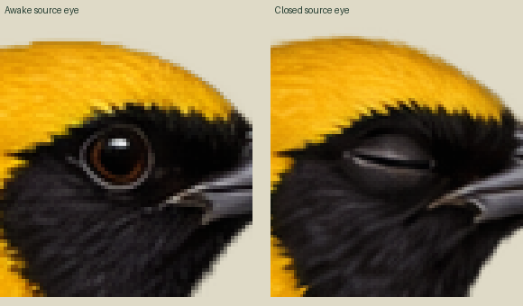
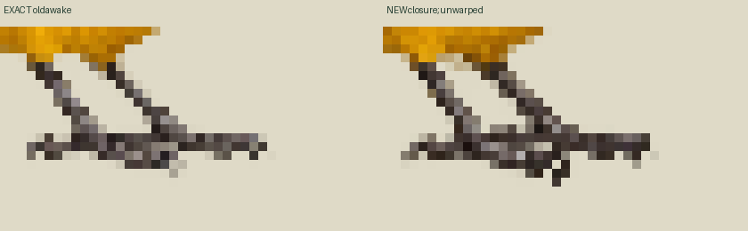
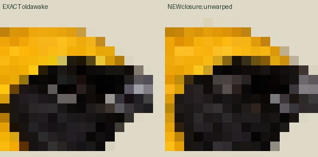
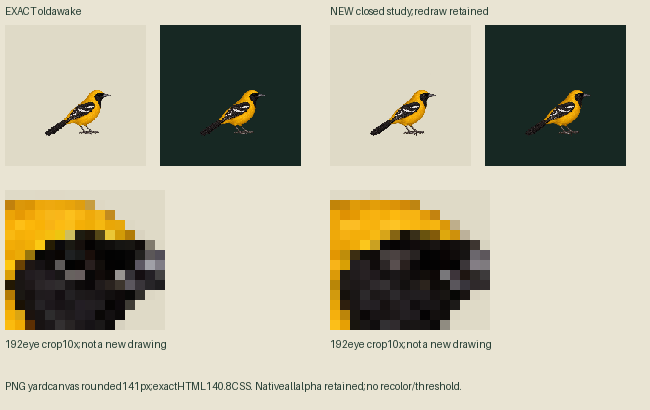

HELD pending independent source review. Native eyelid closure exists; toe/claw and feather redraw retained. No new neutral/look, retry or app binding.
LIGHT: actual140.8CSS canvas
DARK: actual140.8CSS canvas
192-output/density15/11 =140.8worldcanvas; visible bird66world. Same inherited pivot114/150 and foot-region samples113/148,116/148; positive alpha is not physical support approval. Fixed-ROI lowest-row change2outputpixels=1.4667world; no source snapping/painting. Source blink60/3/27 at30Hz loops; default viewer shows one cycle then holds awake. Awake-only idle60ticks preserves old first neutral hold. Authored timing, not measured biology.




PNG/APNG yard previews round canvas to141px; above live canvases use140.8CSSpx. Native1254 original preserved; direct full-canvas192 nearest conversion only. Low-alpha colored fringe retained, no cleanup/threshold/recolor. Geometry/support and canonical Mac admission unapproved; Zod/Sharp admission NOT_RUN.